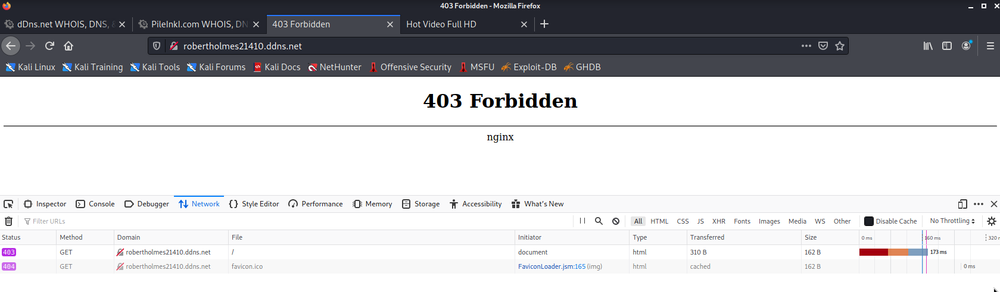

Last April 21, people were posting warnings about a suspicious Facebook post where your account will supposedly get hacked when you click it. From the discussions, I gathered that it is a classic phishing site scam. A very effective one too, because as soon as an account gets compromised the attacker logs in and tags the friends in the account allowing it to spread further. The news of this got big that even the PH CERT issued a security advisory on it.

I was just curious, I swear!
I wanted to see the phishing site for myself but I was unlucky and did not get tagged by anyone. So I reached out to people who did and I eventually got to this page shown below:

To a trained eye, one could easily see the obvious red flags. But how can one notice them if there is a very attention-catching image in the middle beckoning to be clicked? It's a very simple tactic yet very effective. Clicking this link leads to an external website with an even more tantalizing image masquerading as a video.

Clicking play on that video would then lead to a fake Facebook login page. We all know what's next after that.

Of course, the very best course of action when a phishing site is discovered is to report it. I, however, was curious so I decided to poke around first.
The poking begins
Using my knowledge in OSINT (Open Source Intelligence) and pentesting, I poked around to see what I could learn from these set of pages.
One thing that immediately became obvious was that these "set of pages" were hosted on separate domains. The page with the video points to one domain, and the login page to another (that is even protected by DDNS (Dynamic DNS) via No-IP).

I also noticed that the way that the two pages were built was different. The coding style is not the same, different frameworks were used, plus the robots.txt of the login page was more restrictive.
Why are they in separate domains? Wouldn't it be cheaper to just have both pages on the same domain?
My hunch is that maybe the two sites were made by different people. One guy made the landing page then a different one made the login page. Or maybe the login page is an out-of-the-box solution you pay for or rent if you want to set up your own phishing scam? A PhAAS (Phishing-as-a-Service)?

During my reconnaissance, I also noticed that the URLs for the login page were changed a few times over a few hours. It's possible that the pages were being taken down thanks to the reports and the malicious actors were just making new instances and redirecting to it to make sure that the operation continues.
Đăng nhập hoặc đăng
Another thing I noticed is references to various Vietnamese terms and websites. Both pages have directories using the word "homnay", Vietnamese for the word "today". The source code also has a link to the news website "tuoitre.vn".

The Google Analytics ID used can also be found in previously tagged but now-defunct Phishing websites with references to Vietnam. It's entirely possible that these phishing sites initially targeted Vietnamese users but eventually got to Philippine users via the tagging spreading mechanism.

Or maybe it's a deliberate ploy to make it seem that the origin of the phish is Vietnamese. Just to throw off those of us snooping around.
And then it was gone
I was tempted to make a dummy Facebook account and send the login details to the phishing site. The idea was to see how long before an account gets accessed after submitting the credentials and if the tagging of friends is automated or done manually. But sadly I ran out of free time and by the time I came back to it the login page was already completely offline. The landing page is still up though.
This investigation has taught me a lot about phishing sites. It's different from investigating malware but it's easy to see the similarities in intent and approaches. I might try investigating more in the future. I'm curious to find out what the usual modus operandi is and also how the general populace can better protect themselves from it.
This particular site may be down now, but I bet there will be more in the future. As long as there are people to fall for scams like these, this type of attack will continue.
If you want to know more or discuss the details about the phishing site, I would be happy to exchange notes. Drop me a line on Twitter @accidentalrebel.